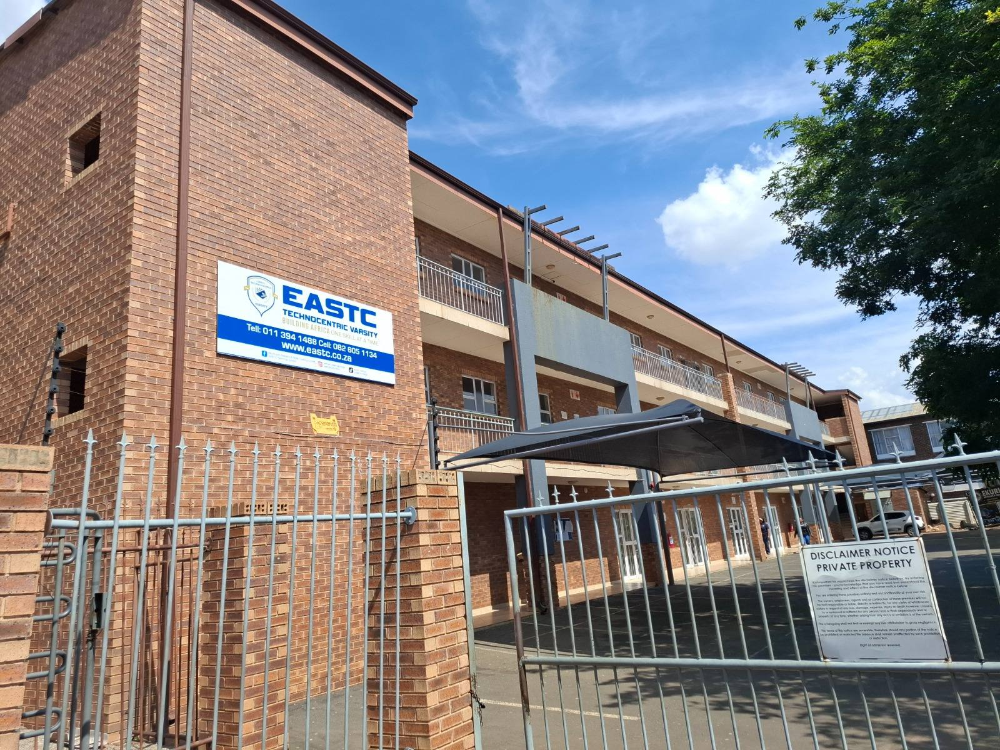
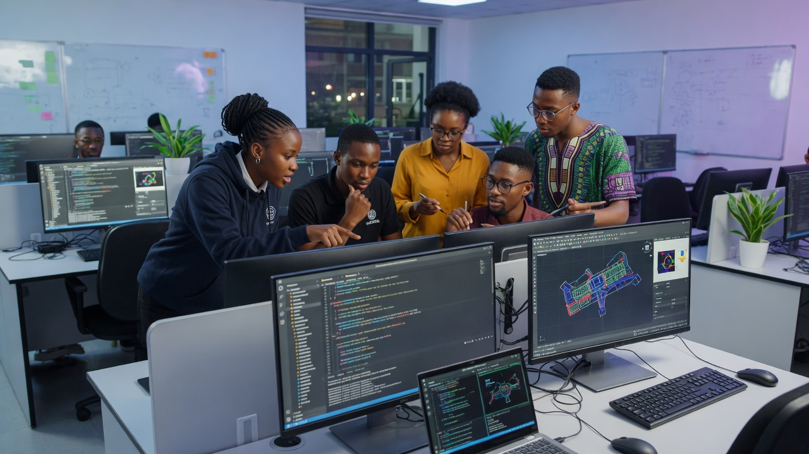
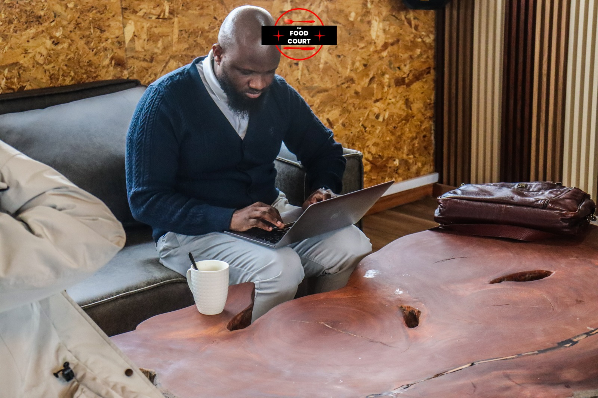
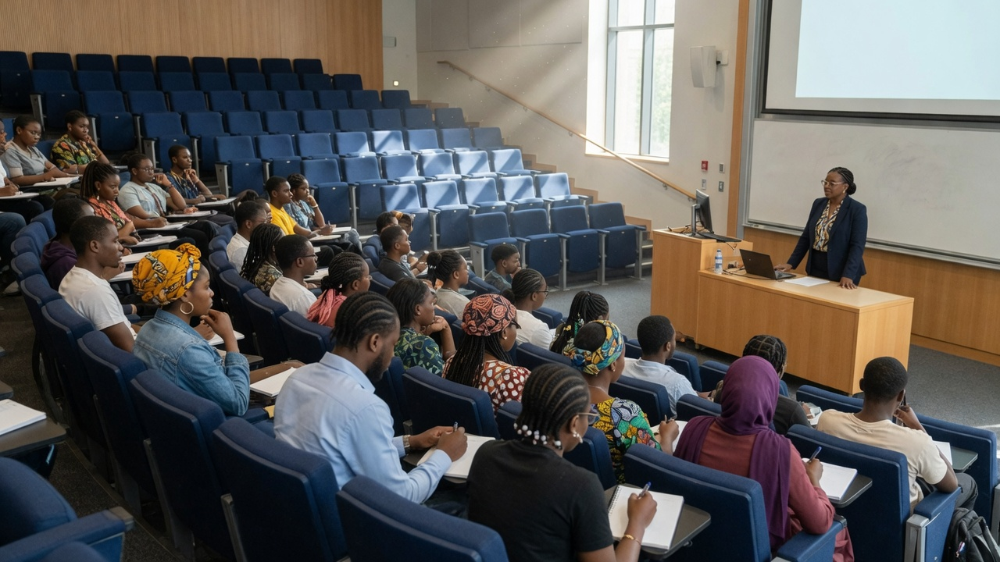
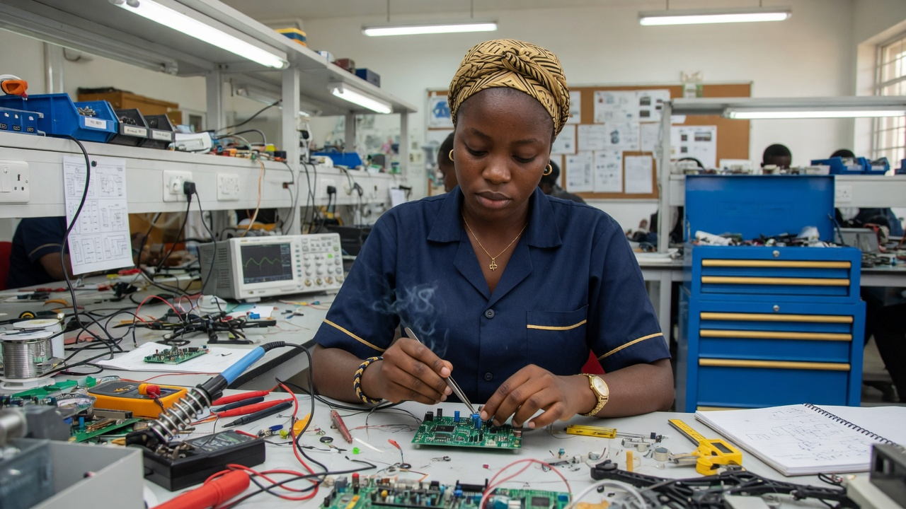
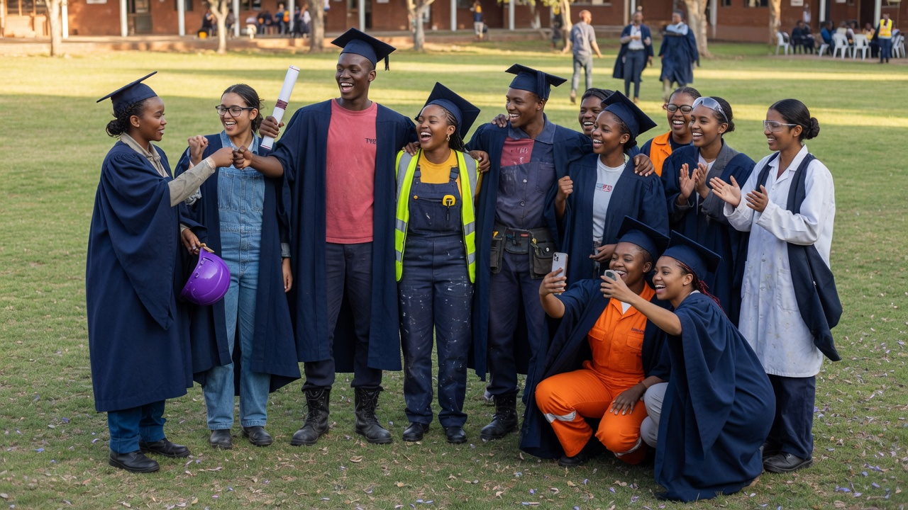

Engineering
Electrical, mechanical, mechatronics, and built environment.
Scroll into the Institute — advanced programmes, WIL, and a campus you can walk.
EASTECH Institute is the future-focused higher learning institution of the EASTC ecosystem. Students progress from foundational TVET and artisan pathways into diplomas and advanced programmes — supported by EASTC Foundation scholarships where need exists.

Electrical, mechanical, mechatronics, and built environment.
Software, networks, data, and artificial intelligence.
Renewables, water, and sustainable systems.
Entrepreneurship, operations, and project management.

Contact, blended, and distance pathways under a dedicated online learning policy.

Structured WIL with industry and artisan hosts — not an afterthought.

Eligible students can apply to EASTC Foundation for bursaries and tools of the trade. Student funding options are listed with fee payments.
43 Maxwell Street. EASTECH Institute’s exterior identity is the reddish brick multi-storey with the white EASTC Technocentric Varsity board — the building Billy supplied. This site does not use The Food Court pavilion, Food Court yard, mixed yard, or the EASTECH TERRITORY welcome-sign shots as Institute identity.



Published EASTC facts only. Where a fact is not on the sites, it is marked to be confirmed.
EASTECH Institute lists higher certificates and degrees in Water Engineering, Information Technology, Cyber Security, and Digital Marketing. Modes on this site include contact, blended, distance, and work-integrated learning where the programme table says so. The news page says founding-cohort applications are open for 2026 in engineering, computing, and energy.
Institute fees, class sizes, and the next start date are to be confirmed.
EASTC Technocentric Varsity, the campus college, publishes short practical courses. Its 2026 brochure says new courses start every Monday, with Saturday part-time classes. The college FAQ states short courses at R11,250. The brochure also lists other prices. Those figures are not Institute tuition.
The EASTC 2026 brochure states shared accommodation at R2,100 for short courses only, and that students supply their own food and bedding. The college FAQ also states shared accommodation at R2,100, with 24-hour security at the premises and accommodation.
A room for EASTECH Institute higher-certificate or degree students is to be confirmed.
Institute programmes are designed to DHET standards. DHET registration and CHE programme accreditation for these Institute qualifications are to be confirmed.
EASTC Technocentric Varsity publishes accreditation number ACC17/07/00004 in its 2026 brochure, and eastech.co.za shows DHET 2019/FE07/D33. The brochure also labels some short training courses non-accredited. Those campus registrations are not published as covering Institute higher certificates or degrees.